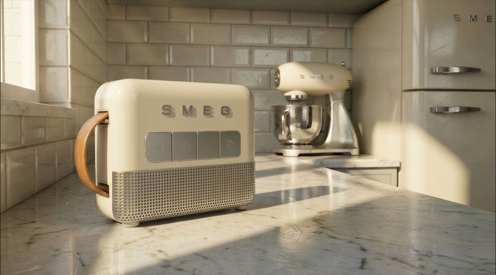

O Som Ganha
uma Nova Forma
Com volumes esculpidos e curvas nostálgicas, "The Atelier" não é apenas um dispositivo eletrónico, é uma extensão da arquitetura do seu espaço.
Despida de distrações visuais, a sua forma monolítica homenageia as raízes do design industrial italiano dos anos 50, com tecnologia de ponta escondida no seu interior.

O Centro das Atenções,
em Qualquer Divisão
Inspirada nas linhas inconfundíveis e nos raios de curvatura generosos dos nossos eletrodomésticos clássicos, a coluna "The Atelier" transforma a forma como vive a sua música.
Desenhada para ser uma peça de afirmação em bancadas de mármore ou mesas de centro, a sua volumetria monolítica garante estabilidade e inércia acústica para graves profundos.

Honestidade Tátil e
Materiais Premium
O corpo superior utiliza esmalte creme polido à mão, repousando sobre uma grelha acústica em alumínio perfurado para melhor dispersão sonora.
A interface física em metal escovado e a alça em couro natural reforçam a interação tátil com o objeto.